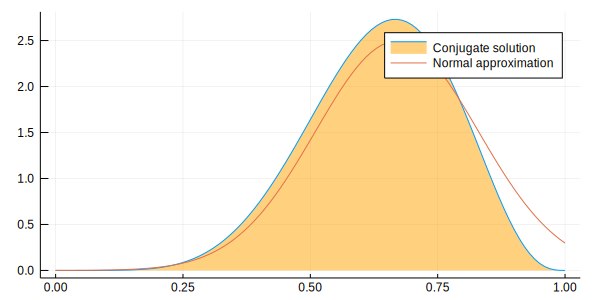

Load Julia packages (libraries) needed
using StatisticalRethinking
using Optim, Turing, Flux.Tracker
gr(size=(600,300));loadedTuring.setadbackend(:reverse_diff);
Turing.turnprogress(false)┌ Info: [Turing]: global PROGRESS is set as false
└ @ Turing /Users/rob/.julia/packages/Turing/0dgDY/src/Turing.jl:81
falsesnippet 2.8t
Define the data
k = 6; n = 9;Define the model
@model globe_toss(n, k) = begin
theta ~ Beta(1, 1) # prior
k ~ Binomial(n, theta) # model
return k, theta
end;Compute the "maximumaposteriori" value
Set search bounds
lb = [0.0]; ub = [1.0];Create (compile) the model
model = globe_toss(n, k);Compute the maximumaposteriori
result = maximum_a_posteriori(model, lb, ub)Results of Optimization Algorithm
* Algorithm: Fminbox with L-BFGS
* Starting Point: [0.5278344803167265]
* Minimizer: [0.6666666666021692]
* Minimum: 1.297811e+00
* Iterations: 3
* Convergence: true
* |x - x'| ≤ 0.0e+00: false
|x - x'| = 4.62e-08
* |f(x) - f(x')| ≤ 0.0e+00 |f(x)|: false
|f(x) - f(x')| = 3.35e-14 |f(x)|
* |g(x)| ≤ 1.0e-08: true
|g(x)| = 1.87e-09
* Stopped by an increasing objective: false
* Reached Maximum Number of Iterations: false
* Objective Calls: 43
* Gradient Calls: 43Use Turing mcmc
chn = sample(model, NUTS(2000, 200, 0.65));┌ Info: [Turing] looking for good initial eps...
└ @ Turing /Users/rob/.julia/packages/Turing/0dgDY/src/samplers/support/hmc_core.jl:246
[NUTS{Turing.FluxTrackerAD,Union{}}] found initial ϵ: 0.4
└ @ Turing /Users/rob/.julia/packages/Turing/0dgDY/src/samplers/support/hmc_core.jl:291
┌ Info: Adapted ϵ = 1.0169708384755447, std = [1.0]; 200 iterations is used for adaption.
└ @ Turing /Users/rob/.julia/packages/Turing/0dgDY/src/samplers/adapt/adapt.jl:91
[NUTS] Finished with
Running time = 4.928556796000006;
#lf / sample = 0.002;
#evals / sample = 6.539;
pre-cond. metric = [1.0].Look at the generated draws (in chn)
describe(chn)Iterations = 1:2000
Thinning interval = 1
Chains = 1
Samples per chain = 2000
Empirical Posterior Estimates:
Mean SD Naive SE MCSE ESS
lf_num 0.0020000000 0.089442719 0.0020000000 0.0020000000 2000.0000
elapsed 0.0024642784 0.075235635 0.0016823199 0.0021980359 1171.5953
epsilon 1.0548866415 0.461890119 0.0103281770 0.0271973584 288.4190
theta 0.6320118370 0.139384359 0.0031167290 0.0049144284 804.4185
lp -3.3031059558 0.785831841 0.0175717342 0.0220789561 1266.7828
eval_num 6.5390000000 3.424812940 0.0765811454 0.1028281653 1109.3013
lf_eps 1.0548866415 0.461890119 0.0103281770 0.0271973584 288.4190
Quantiles:
2.5% 25.0% 50.0% 75.0% 97.5%
lf_num 0.0000000000 0.0000000000 0.0000000000 0.000000000 0.00000000000
elapsed 0.0001347157 0.0001382845 0.0001499945 0.000359588 0.00055348215
epsilon 0.5855121691 1.0169708385 1.0169708385 1.016970838 1.76718835045
theta 0.3244780718 0.5476709438 0.6403916720 0.734694037 0.87726562376
lp -5.5307004970 -3.4356358751 -2.9975359347 -2.822909944 -2.77975955697
eval_num 4.0000000000 4.0000000000 4.0000000000 10.000000000 10.00000000000
lf_eps 0.5855121691 1.0169708385 1.0169708385 1.016970838 1.76718835045Look at the mean and sd
println("\ntheta = $(mean_and_std(chn[:theta][201:2000]))\n")theta = (0.6339059485766951, 0.13765016043159534)Fix the inclusion of adaptation samples
chn2 = MCMCChain.Chains(chn.value[201:2000,:,:], names=chn.names)Object of type "Chains{Float64}"
Iterations = 1:1800
Thinning interval = 1
Chains = 1
Samples per chain = 1800
Union{Missing, Float64}[0.0 0.0245762 … 22.0 1.01697; 0.0 0.000412524 … 4.0 1.01697; … ; 0.0 0.000145242 … 4.0 1.01697; 0.0 0.000145184 … 4.0 1.01697]Look at the proper draws (in corrected chn2)
describe(chn2)Iterations = 1:1800
Thinning interval = 1
Chains = 1
Samples per chain = 1800
Empirical Posterior Estimates:
Mean SD Naive SE MCSE ESS
lf_num 0.00000000000 0.00000000000000000000000 0.000000000000000000000000 0.000000000000 NaN
elapsed 0.00026535625 0.00064334605836867853230 0.000015163812017404300952 0.000019084184 1136.4284
epsilon 1.01697083848 0.00000000000000066631893 0.000000000000000015705288 0.000000000000 1800.0000
theta 0.63390594858 0.13765016043159533642992 0.003244445395753241690590 0.005260408830 684.7223
lp -3.29160972548 0.75270133426860552638971 0.017741340588983106618670 0.020840661177 1304.4348
eval_num 6.41666666667 2.96388302012344873048733 0.069859392739098497004946 0.059765336315 1800.0000
lf_eps 1.01697083848 0.00000000000000066631893 0.000000000000000015705288 0.000000000000 1800.0000
Quantiles:
2.5% 25.0% 50.0% 75.0% 97.5%
lf_num 0.00000000000 0.00000000000 0.00000000 0.00000000000 0.00000000000
elapsed 0.00013467397 0.00013860325 0.00014983 0.00035968725 0.00048772625
epsilon 1.01697083848 1.01697083848 1.01697084 1.01697083848 1.01697083848
theta 0.33090315595 0.54872730536 0.64026470 0.73821364480 0.87726562376
lp -5.50759395812 -3.43606207112 -3.00188591 -2.82229156435 -2.77975601301
eval_num 4.00000000000 4.00000000000 4.00000000 10.00000000000 10.00000000000
lf_eps 1.01697083848 1.01697083848 1.01697084 1.01697083848 1.01697083848Compute at hpd region
bnds = MCMCChain.hpd(chn2[:, 4, :], alpha=0.06);analytical calculation
w = 6; n = 9; x = 0:0.01:1
plot( x, pdf.(Beta( w+1 , n-w+1 ) , x ), fill=(0, .5,:orange), lab="Conjugate solution")
quadratic approximation
plot!( x, pdf.(Normal( 0.67 , 0.16 ) , x ), lab="Normal approximation")
Turing Chain & 89%hpd region boundaries
density!(chn2[:theta], lab="Turing chain")
vline!([bnds[1]], line=:dash, lab="hpd lower bound")
vline!([bnds[2]], line=:dash, lab="hpd upper bound")MethodError: no method matching getindex(::Chains{Float64}, ::Symbol)
Closest candidates are:
getindex(::Chains, ::Any, !Matched::Any, !Matched::Any) at /Users/rob/.julia/packages/MCMCChain/wl69W/src/chains.jl:110
getindex(::Any, !Matched::AbstractTrees.ImplicitRootState) at /Users/rob/.julia/packages/AbstractTrees/z1wBY/src/AbstractTrees.jl:344
Stacktrace:
[1] top-level scope at In[16]:1Show hpd region
println("hpd bounds = $bnds\n")hpd bounds = 94% Lower 94% Upper
theta 0.3873379 0.9004367End of clip_08t.jl
This notebook was generated using Literate.jl.